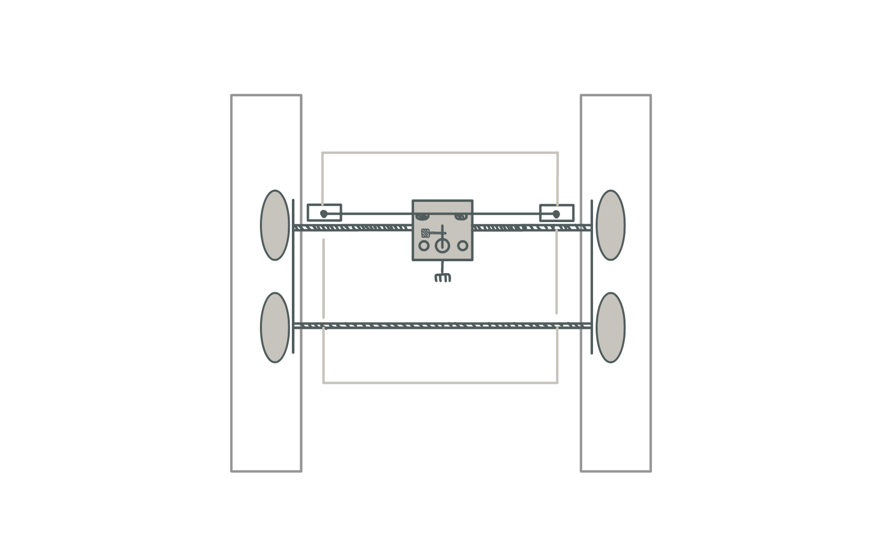

<div class="textcontainer">
<p class="margin"> </p>
<h3>Weeks 10-12: Machine Building</h3>
<p></br></p>
<h4>Assignment: Build a Drawing Robot</h4>
We're asked to make a drawing machines that has the ability to calibrate its motor position to a "home" position each time on startup, and have the precision to
draw a circle and mark its center point. We took an old design of a drawing machine left by a previous year to convert it for our use case!
<p></br></p>
We decided we wanted to make a sand-sculpture drawing. The whole machine is comprised of a black-metallic gantry with four wheels and two axels.
The machine moves in the x-direction by wheels on raised tracks.
The y-direction is moved by a conveyer belt, and on this belt sits a platform. The platform holds the end point.
The end point is a rake that can be lifted and dropped using a servo motor mechanism.
The entire machine is powered by a circuit that also sits on the edge of the gantry.
Both the wheels and the conveyer belt are powered by stepper motors and drivers.
The conveyer belt knows when to stop moving the platform towards the edges of the gantry when the platform runs into a switch.
<p><br></p>
<div class="img-container">
<p></p>
</div>
<p><br></p>
<h4>Part 1: Hardware</h4>
We used the gantry, servos, conveyer belt, and wheels given to us.
We laser cut out a platform for us to screw on top of the conveyer belt mover (the part that interacts with the belt).
We also laser cut a square sand-box. The dimensions were 14 inches (approx. 355mm) on either side, with a thickness of 6mm and wall-height of 30mm.
Feel free to download the sand-box dxf file using the button below. Once it is laser cut on wood (set the thickness and z-axis cut correctly),
combine the pieces together either wood glue and/or hot glue.
<p class="margin"> </p>
<div class="flexrow">
<a id="btn" href="./week10.zip" download>Download Sandbox dxf file
</a>
</div>
<p class="margin"> </p>
<div class="img-container">
<img src="sandbox.png">
</div>
<p><br></p>
<h4>Part 2: Circuit and Code</h4>
Although we did not make the circuit, we thought it was really cool, so here is a photo of how it's set up!
<p><br></p>
<div class="img-container">
<img src="TODO.png">
</div>
<p><br></p>
The code that powers this circuit can be found here:
<p><br></p>
<div class="code-box">
<pre><code class="language-arduino">
</code></pre>
</div>
<p><br></p>
<h4>Part 3: Demo</h4>
Here is our 30 second video:
<p><br></p>
<div class="video-container">
<video controls muted>
<source src="mov2.mp4" type="video/mp4">
Your browser does not support the video tag.
</video>
</div>
<p><br></p>
</div>